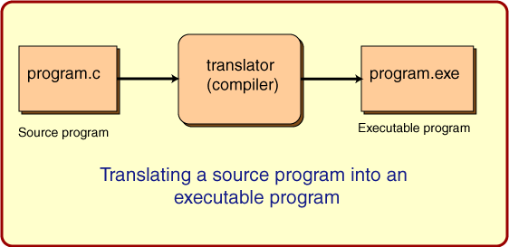
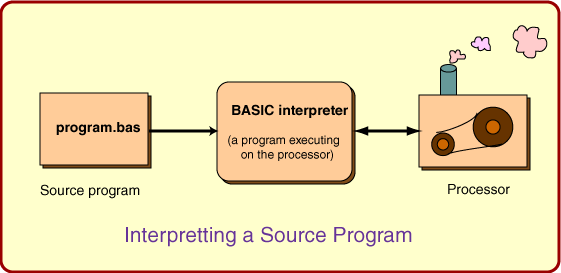

When a program is running on a computer the processor is constantly performing very many, very tiny electronic operations. For example, one such operation reads one byte of data from main memory into the processor. Another operation tests if one of the bits in the byte is a "1" bit. Most processors are able to perform several hundred types of small operations like these.
Those are the only things that a processor can do. It has a small set of tiny electronic operations that it can to perform, and that is all. These little electronic operations are performed one at a time. But millions of them are performed per second. Millions of small operations can add up to a large and useful action.
The collection of machine instructions in main memory is called a machine language program or (more commonly) an executable program
A source program (or source file) is a text file that contains instructions written in a high level language. It can not be executed (made to run) by a processor without some intermediate steps.
Because a source program can not be executed by a processor, it must be translated by a
translator
or in other words, a
compiler
in order for the processor to understand the instructions.
Here is a picture that shows what usually happens with programs written in "C"

Programs written in a high level language are never directly executed by the processor. You have already seen one way to execute such a program: use a translator to create a machine language program that can be executed directly.
Another way to is to use an
interpreter
for the language. An
interpreter
is a program that acts like a processor that can directly execute a high level language.
Here is a diagram:
